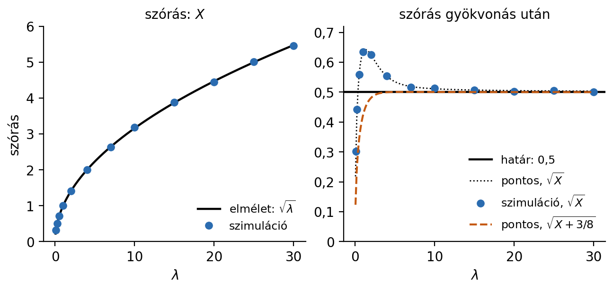
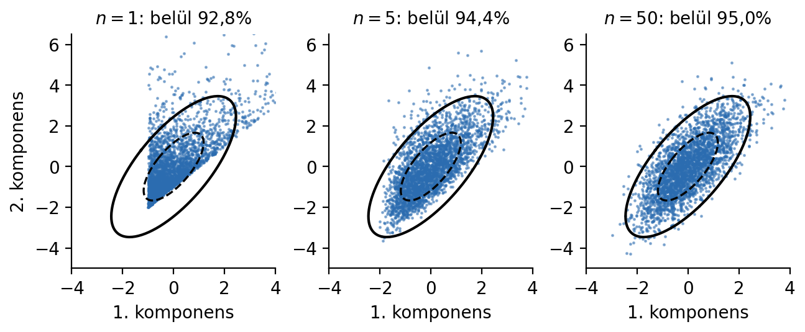

10.2 Slutsky-lemma, delta-módszer
és többdimenziós CHT
10.2.1 Motiváció
A webáruház A/B tesztjében az „A” változatot 1000 látogatóból 100, a
„B” változatot 1000-ből 130 vásárolta meg. A termékvezető nem a két
arányt kéri, hanem a relatív javulást, a
hányadost, a hozzá tartozó bizonytalansággal. A szerverfarmon ugyanez a
helyzet: a naplóból a kiszolgálási idő átlagát becsüljük, de a
tervezéshez a rátát,
-ot
használjuk.
Mindkét mennyiség az átlagok függvénye. A A centrális határeloszlás-tétel az átlag hibájáról
beszél; nem mondja meg, hogy
vagy
mennyire ingadozik. Emellett a
-t
sem ismerjük, csak a mintából becsült
-et.
Ez az alfejezet a statisztikai aszimptotika három munkaeszközét adja: a
Slutsky-lemmát (becsült mennyiségek behelyettesítése),
a delta-módszert (függvény szórása) és a
többdimenziós CHT-t (több átlag együtt).
10.2.2 Szemlélet
Nagy
-nél
az átlag a
körüli szűk sávban mozog, nagyságrendben
szélesen. Egy sima
függvény ilyen szűk sávban alig különbözik az érintőjétől:
Szavakban:
ingadozása az átlag ingadozása,
-szeresre
nyújtva. Egy lineárisan nyújtott normális változó pedig normális
marad.
Statikus változat (mint a PDF-ben)
A g(x) = 1/x görbe és érintője az 1 pontban, alatta az
exponenciális tagok átlagának, jobbra az 1/átlag eloszlásának
hisztogramja n = 10 és n = 100 esetén
Az ábrán
tagok átlaga látszik
().
-nél
a görbe a hisztogram tartományán erősen elhajlik az érintőtől, ezért
eloszlása jobbra ferde, és a narancs normális közelítés rosszul
illeszkedik.
-nál
a releváns szakaszon a görbe szinte egyenes, a jobb oldali hisztogram
pedig a közelítéshez simul.
A becsült szórás kérdésére a szemlélet hasonló: ha
nagy mintán közel van
-hoz,
akkor a vele való osztás „majdnem” ugyanaz, mint
-val
osztani. Ezt a „majdnemet” teszi pontossá Slutsky.
10.2.3 Formalizmus
10.2.3.1 Slutsky-lemma
Tétel (Slutsky). Legyen
,
és
,
ahol
állandó. Ekkor
Szavakban: egy állandóhoz tartó „zavaró” tag a határeloszlásban úgy
viselkedik, mintha pontosan az állandó lenne. A függetlenségüket nem
kell feltenni.
Bizonyítás (összegre). Rögzítsünk
-t.
Ha
és
,
akkor
.
Ezért
Fordítva, ha
és
,
akkor
,
tehát
Legyen
az
folytonossági pontja, és válasszunk olyan
-okat,
amelyekre
is az (ilyen ponthalmaz sűrű).
esetén az
-es
tagok eltűnnek, így a
alsó és felső határértéke
és
közé esik.
mellett mindkettő
-hez
tart.
A szorzatra írjuk
alakba. Itt
(folytonos leképezés tétele, Konvergenciafajták). A második tag valószínűségben
0-hoz tart: tetszőleges
-re
ahol az első tag nagy
-re
kicsi (mert
eloszlásban konvergál), a második
esetén eltűnik. Az összegszabály fejezi be a bizonyítást; a hányados a
észrevétellel adódik.
Miért kell, hogy
állandó legyen? Legyen
és
.
Ekkor
és
,
de
,
nem
.
Az eloszlásbeli határok külön-külön nem mondanak semmit a közös
viselkedésről.
Alkalmazás: becsült szórás. I.i.d. minta,
.
A korrigált mintavariancia
a nagy számok törvénye és a folytonos leképezés tétele szerint, tehát
.
A studentizált átlagra Slutsky adja:
Tétel (delta-módszer). Legyen
,
és
differenciálható a
pontban. Ekkor
Speciálisan a CHT-val: ha
,
akkor
.
Szavakban:
standard hibája közelítően
.
Bizonyítás. A differenciálhatóság azt jelenti, hogy
,
ahol
,
ha
,
és legyen
.
Mivel
,
és
,
Slutsky szerint
.
Ezért (folytonos leképezés,
folytonos
-ban)
.
Végül
és ismét Slutsky: az első tényező
-hoz
tart valószínűségben, a második
-hez
eloszlásban.
Ha
,
a határ elfajul:
.
Kétszer differenciálható
-nél
a másodrendű tag marad, és
a helyes skála:
A határ nem normális, hanem (előjeles) khi-négyzet, és az ingadozás
rendű (5. feladat).
A becsült standard hiba.
-t
és
-t
sem ismerjük. Ha
folytonos,
,
tehát Slutsky miatt
és a közelítő 95%-os intervallum
.
aszimptotikus variancia
Az első sor jelentése:
szórása a relatív szórás,
.
Az
ráta becslőjére
()
a második sor
-et
ad.
10.2.3.3 Varianciastabilizáló
transzformáció
Számlálási adatoknál a szórás függ a várható értéktől:
-nál
.
Ez zavaró, ha különböző forgalmú csoportokat hasonlítunk össze. Olyan
-t
keresünk, amelynél
nem függ
-tól,
ahol
az eredeti aszimptotikus variancia. Ez a
egyenlet, tehát
.
Poisson:
,
(a konstans szabad), és
.
Tehát
,
és egyetlen nagy várható értékű Poisson-változóra
szórása közel
.
Arány:
,
,
aszimptotikus variancia
,
azaz
.

Poisson-változó szórása a várható érték függvényében nyersen
és gyökvonás után
Az ábra a korlátot is mutatja: kis
-nál
a stabilizálás nem működik, mert
többnyire 0 vagy 1. A
alakú Anscombe-féle eltolás (ellenőrizendő: Anscombe, 1948) már
-től
gyakorlatilag pontosan
szórást ad.
10.2.3.4 Többdimenziós CHT és
gradienses delta-módszer
Tétel (többdimenziós CHT). Legyenek
i.i.d. véletlen vektorok
várható értékkel és véges
kovarianciamátrixszal. Ekkor
Bizonyítás. A Cramér–Wold-tétel
szerint egy véletlen vektorsorozat pontosan akkor konvergál eloszlásban,
ha minden
-vel
vett lineáris kombinációja konvergál a határvektor ugyanazon
kombinációjához ([S-DURRETT]). Itt
skalár változó
varianciával. Ha ez pozitív, az egydimenziós CHT adja a
határt; ez éppen
eloszlása, ha
.
Ha
,
akkor mindkét oldal azonosan 0.

Korrelált, ferde párok standardizált átlagának pontfelhője
1, 5 és 50 tag esetén a határeloszlás 50 és 95 százalékos
ellipszisével
Az ábrán
párok szerepelnek, ahol
függetlenek:
,
sorai
és
.
Figyeld meg: már
-nél
a pontok kb. 93%-a esik a 95%-os ellipszisbe, de a felhő alakja
egészen más. A lefedési arány egymagában nem bizonyítja a jó
közelítést.
Lineáris transzformációra a jól ismert
szabály érvényes:
.
Tétel (gradienses delta-módszer). Ha ráadásul
differenciálható
-ben,
és
,
akkor
A bizonyítás az egydimenziós mintát követi:
,
a maradék
-szerese
valószínűségben eltűnik, a lineáris tagra pedig
.
Vektorértékű
-nél
a Jacobi-mátrix.
Hányados.
becslése
.
A
gradiense
,
így a
varianciákkal és
kovarianciával
A pozitív kovariancia csökkenti a hányados
bizonytalanságát; ha elhagyjuk, hibás sávot kapunk.
Két független minta. Ha
és
független csoportokból származik, a
varianciája a két
-variancia
összege (független tagok):
.
A/B teszt.
,
,
.
A log-arány
.
A becsült standard hiba
A 95%-os intervallum log-skálán
,
visszaexponálva
.
Közvetlenül a hányadosra alkalmazva a delta-módszert,
,
és
.
A két intervallum eltér: az egyik kizárja az 1-et, a másik nem. A
log-skála a megbízhatóbb, mert a hányados mintavételi eloszlása ferde, a
logaritmusa sokkal szimmetrikusabb.
Bevétel percenként. Egy munkamenet hossza
perc, a bevétele
;
tegyük fel, hogy
,
,
,
,
,
és
munkamenetet figyelünk meg.
,
és
A kovariancia elhagyásával
jönne ki, 12%-kal nagyobb.
10.2.5 Kód
A delta_variance numerikus gradienssel számolja a
kifejezést, tehát ellenőrzi a kézi levezetést.
import mathimport numpy as npfrom probkit import dists, limits as li, mc, multivar as mvpA, pB, n =0.10, 0.13, 1000se = math.sqrt((1- pA) / (n * pA) + (1- pB) / (n * pB))low, high = math.log(pB / pA) -1.96* se, math.log(pB / pA) +1.96* seprint(f"SH(ln arány) = {se:.4f} arány 95%: [{math.exp(low):.3f}; {math.exp(high):.3f}]")S2 = np.diag([pA * (1- pA), pB * (1- pB)]) # egy megfigyelés-pár kovarianciájav = li.delta_variance(lambda q: math.log(q[1] / q[0]), [pA, pB], S2)print(f"numerikus gradienssel: SH = {math.sqrt(v / n):.4f}")m = np.array([4.0, 2.0])S = np.array([[4.0, 2.0], [2.0, 9.0]])ratio =lambda q: q[1] / q[0]S0 = np.diag([4.0, 9.0]) # a kovariancia elhagyva (hibás)sh, sh0 = [math.sqrt(li.delta_variance(ratio, m, C) /400) for C in (S, S0)]print(f"hányados: SH = {sh:.4f}, kovariancia nélkül {sh0:.4f}")
SH(ln arány) = 0.1253 arány 95%: [1.017; 1.662]
numerikus gradienssel: SH = 0.1253
hányados: SH = 0.0354, kovariancia nélkül 0.0395
10.2.6 Szimulációs ellenőrzés
Slutsky.
mintából (mag: 2030) a studentizált
két farkát nézzük; a normális határ mindkettőre
.
rng = np.random.default_rng(2030)exp1 = dists.Exponential(1.0)print(" n P(T ≤ −1.96) ± SH P(T ≥ 1.96) ± SH P(|T| < 1.96)")for n in (10, 30, 100, 1000): t = li.studentized_means(exp1.sample, 1.0, n, 100_000, rng) lo, hi = mc.mc_mean(t <=-1.96), mc.mc_mean(t >=1.96) mid = mc.mc_mean(np.abs(t) <1.96)print(f"{n:5d}{lo.estimate:.4f} ± {lo.se:.4f}{hi.estimate:.4f} ± {hi.se:.4f}"f" {mid.estimate:.4f} ± {mid.se:.4f}")
A határ iránya egyezik a lemmával:
növelésével mindkét farok
-höz,
a középső valószínűség
-höz
közeledik. A konvergencia viszont lassú és
aszimmetrikus:
-nél
a bal farok
,
a jobb
.
Ok: ferde adatnál
és
erősen korrelál (kis átlaghoz kis szórás tartozik), ezért a kis átlagú
minták
értéke nagyon negatív. A „95%-os” intervallum
-nél
csak 87%-ban fed – ezt a lefedés fogalmával a Pivot,
-
és
-intervallum,
a lefedés értelmezése alfejezet vizsgálja.
Delta-módszer. A
empirikus varianciáját vetjük össze a
elméleti értékkel. Az
-ra
a véges mintás variancia is ismert:
.
def var_with_se(x):"""A mintavariancia és közelítő standard hibája (a negyedik momentumból).""" d = x - x.mean() v = np.mean(d**2)return v, math.sqrt((np.mean(d**4) - v**2) / x.size)print("g n empirikus ± SH elmélet (n→∞) véges n-re pontos")for name, g in (("1/x", lambda x: 1/ x), ("ln x", np.log), ("√x", np.sqrt)):for n in (10, 200): res = li.delta_experiment(exp1, g, n, 100_000, rng) v, v_se = var_with_se(res["values"]) exact =f"{n**3/ ((n -1)**2* (n -2)):.4f}"if name =="1/x"else"–"print(f"{name:4s}{n:5d}{v:.4f} ± {v_se:.4f}{res['theory_var']:.4f}"f" {exact}")
g n empirikus ± SH elmélet (n→∞) véges n-re pontos
1/x 10 1.5372 ± 0.0126 1.0000 1.5432
1/x 200 1.0176 ± 0.0047 1.0000 1.0203
ln x 10 1.0429 ± 0.0049 1.0000 –
ln x 200 1.0014 ± 0.0045 1.0000 –
√x 10 0.2460 ± 0.0011 0.2500 –
√x 200 0.2489 ± 0.0011 0.2500 –
-nál
mindhárom függvénynél közel vagyunk a delta-módszer értékéhez; az
véges mintás pontos értéke mindkét
-nél
1 standard hibán belül egyezik a szimulációval.
-nél
-nél
a delta-módszer harmadával alábecsüli a varianciát – a
görbület a farokban nagy. A
már kis
-nél
is pontos, mert közel lineáris, és éppen stabilizáló alakú.
Hányados és többdimenziós CHT. A bevételpéldát
,
alakban szimuláljuk, ahol
független
-től:
ez pontosan a megadott momentumokat adja.
hányados: elméleti SH 0.03536, szimulált 0.03545 ± 0.00018
95%-os ellipszisbe esik: 0.9496 ± 0.0015
empirikus kovariancia: [[4.05, 1.98], [1.98, 9.01]]
A szórás, a lefedés és a kovarianciamátrix a Monte Carlo-hibán belül
megegyezik az elmélettel.
10.2.7 Próbáld ki
A közelítés javulása. A delta-módszer interaktív
lapján válaszd a „g(x) = 1/x” függvényt, és húzd a „Mintaméret (n)”
csúszkát 3-ról 500-ra. Figyeld az állapotsor „arány” értékét (szimulált
szórás / delta-szórás):
-nál
kb. 2,4,
-nál
gyakorlatilag 1. Magyarázat: az átlag szűk sávjában a görbe egyre inkább
egyenes.
Melyik függvény könnyű?
mellett válts a „g(x) = √x” és a „g(x) = x²” között. A gyöknél az arány
közel 1, a négyzetnél 1,1 körül: a kevésbé görbülő (a tartományon közel
lineáris) függvényt közelíti jobban az érintő.
Elfajult eset. Válaszd a „g(x) = (x − 1)², g′(1) =
0” lehetőséget, és kapcsold az „Érintő” jelölőt: az érintő vízszintes. A
jobb oldali eloszlás egyoldalú, nem harang alakú; az
átlaga viszont
-től
függetlenül 1 körül marad: az ingadozás
rendű, a határ
.
Torzítás.
-nél
-en
nézd a „g(átlag) átlaga” értéket: 1,1 körüli, miközben
.
Ez a Jensen-egyenlőtlenség
(
konvex) torzítása, nagyságrendje
;
a delta-módszer a vezető tagban nem látja.
10.2.8 Tipikus hibák
Tünet: a
intervalluma nagyságrendekkel tér el a szimulációtól.
Ok: a
négyzetre emelése kimaradt, vagy a
rossz helyen van. Javítás:
;
numerikus gradienssel ellenőrizd.
Tünet: a hányados sávja túl széles vagy túl szűk.
Ok: a számláló és a nevező kovarianciáját elhagytuk
(párosított adatnál nem nulla). Javítás: a teljes
-val
számolj; független csoportoknál a kovariancia tényleg 0.
Tünet:
„
és
,
tehát
.”
Ok: Slutsky feltételének (állandó határ) elhagyása.
Javítás: együttes konvergencia vagy függetlenség
kell.
Tünet: a „95%-os” sáv ferde adatnál jóval ritkábban
fed. Ok: a határeloszlás aszimptotikus, kis
-nél
ferde. Javítás: transzformáld a skálát (például
logaritmus), növeld a mintát, vagy bootstrapet használj, és ellenőrizd
szimulációval.
Tünet:
mellett a becsült SH nullához közeli, a valóság nem.
Ok: elfajult eset, a másodrendű tag dominál.
Javítás: másodrendű delta-módszer vagy szimuláció.
10.2.9 Önellenőrzés
Miért elég a Slutsky-lemmához
,
és miért nem elég két külön eloszlásbeli konvergencia?
Mi
közelítő standard hibája, és mit jelent szavakban?
Milyen transzformáció stabilizálja a Poisson-változó varianciáját,
és mi lesz a szórás határa?
Mit mond a Cramér–Wold-tétel, és mire használtuk?
Miért lesz
esetén
a helyes skálázás
helyett?
10.2.10 Feladatok
(A)
kiszolgálási idő átlaga
s, az eloszlás exponenciálisnak tekinthető. Add meg
standard hibáját és közelítő 95%-os intervallumát.
(A)
látogatóból 80 kattintott. Számítsd ki a log-esély standard hibáját, a
95%-os intervallumot log-esély skálán, majd alakítsd vissza
aránnyá.
(B) 50 napon át számoltuk a hibás kéréseket, a napi
átlag 9, a napi darabszám Poisson. Adj 95%-os intervallumot
-ra
közvetlenül és gyökös transzformációval.
(B)
mellett mi a
becslő határeloszlása a helyes skálázással?
(C) Bizonyítsd be: ha
kétszer folytonosan differenciálható
környezetében, és
,
akkor
.
(C, programozós) Mérd 100 000 ismétléssel, milyen
arányban tartalmazza a valódi
-et
exponenciális mintából
esetén (a) a
intervallum, (b) a
intervallum visszaexponálva. Melyik jobb, és miért?
10.2.11 Rövid összefoglaló
Slutsky: ha
és
(állandó), akkor az összeg, a szorzat és
(
esetén) a hányados határa
,
,
;
ezért
.
Delta-módszer:
,
ha
;
több változóban
.
A többdimenziós CHT:
.
A gyök és az arkusz szinusz stabilizálja a Poisson-, illetve arányadatok
varianciáját. Ezek aszimptotikus eredmények: ferde adatnál és kis
-nél
a lefedést szimulációval kell ellenőrizni.
10.2.12 Megoldások
10.2.12.1 Válaszok az önellenőrző
kérdésekre
Az állandóhoz tartás valószínűségben azt jelenti, hogy
a
-vel
helyettesíthető. Két eloszlásbeli határ nem rögzíti az együttes
eloszlást; például
és
összege 0.
:
az átlag relatív (százalékos) bizonytalansága.
A négyzetgyök;
szórása nagy
-ra
-hez
tart.
Vektorok eloszlásbeli konvergenciája ekvivalens minden lineáris
kombinációjuk konvergenciájával; így a többdimenziós CHT az
egydimenziósból következik.
Az elsőrendű tag eltűnik, a vezető tag
-tel
arányos, ez pedig
rendű.
10.2.12.2 1. feladat
.
Exponenciálisnál az aszimptotikus variancia
,
tehát
.
Intervallum:
.
10.2.12.3 2. feladat
,
log-esély
.
.
Intervallum:
.
Visszaalakítva
:
.
Az intervallum az arány skáláján aszimmetrikus, és biztosan
-ben
marad.
10.2.12.4 3. feladat
Közvetlenül:
,
intervallum
.
Gyökösen:
,
,
intervallum
,
négyzetre emelve
.
A két intervallum alig tér el; a gyökös változat enyhén jobbra tolt,
követve a Poisson ferdeségét.
10.2.12.5 4. feladat
,
,
,
.
Ezért
.
Ellenőrzés azonossággal:
,
és
.
10.2.12.6 5. feladat
Taylor-tétel Lagrange-maradékkal:
,
ahol
a
és
között van. A NSZT szerint
,
ezért
,
és
folytonossága miatt
.
A CHT és a folytonos leképezés szerint
.
Slutsky a két tényezőt összeszorozza.
10.2.12.7 6. feladat
rng = np.random.default_rng(3006)for n in (10, 30, 100): x = rng.exponential(1.0, (100_000, n)) m, s = x.mean(axis=1), x.std(axis=1, ddof=1) half =1.96* s / math.sqrt(n) direct = mc.mc_mean(np.abs(m -1) <= half) logscale = mc.mc_mean(np.abs(np.log(m) -0.0) <= half / m)print(f"n = {n:3d} közvetlen {direct.estimate:.4f} ± {direct.se:.4f}"f" log-skálán {logscale.estimate:.4f} ± {logscale.se:.4f}")
n = 10 közvetlen 0.8707 ± 0.0011 log-skálán 0.8952 ± 0.0010
n = 30 közvetlen 0.9181 ± 0.0009 log-skálán 0.9293 ± 0.0008
n = 100 közvetlen 0.9387 ± 0.0008 log-skálán 0.9427 ± 0.0007
A log-skálás intervallum minden
-nél
közelebb van a névleges 95%-hoz: a logaritmus csökkenti
eloszlásának ferdeségét, és az intervallum felfelé aszimmetrikus lesz,
ahol a hibák is nagyobbak. Egyik sem éri el pontosan a 95%-ot kis
mintán.